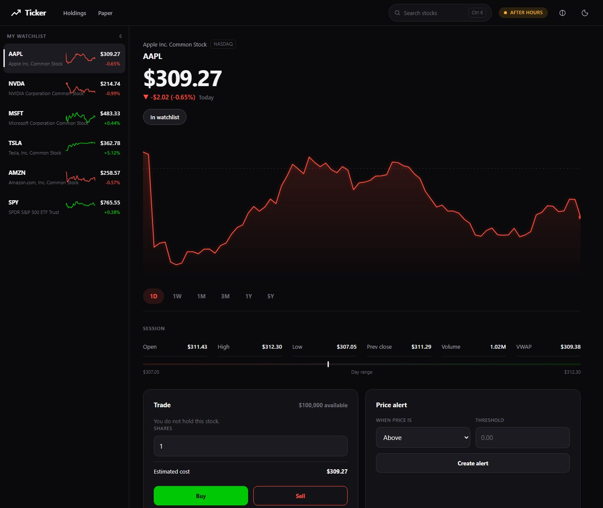
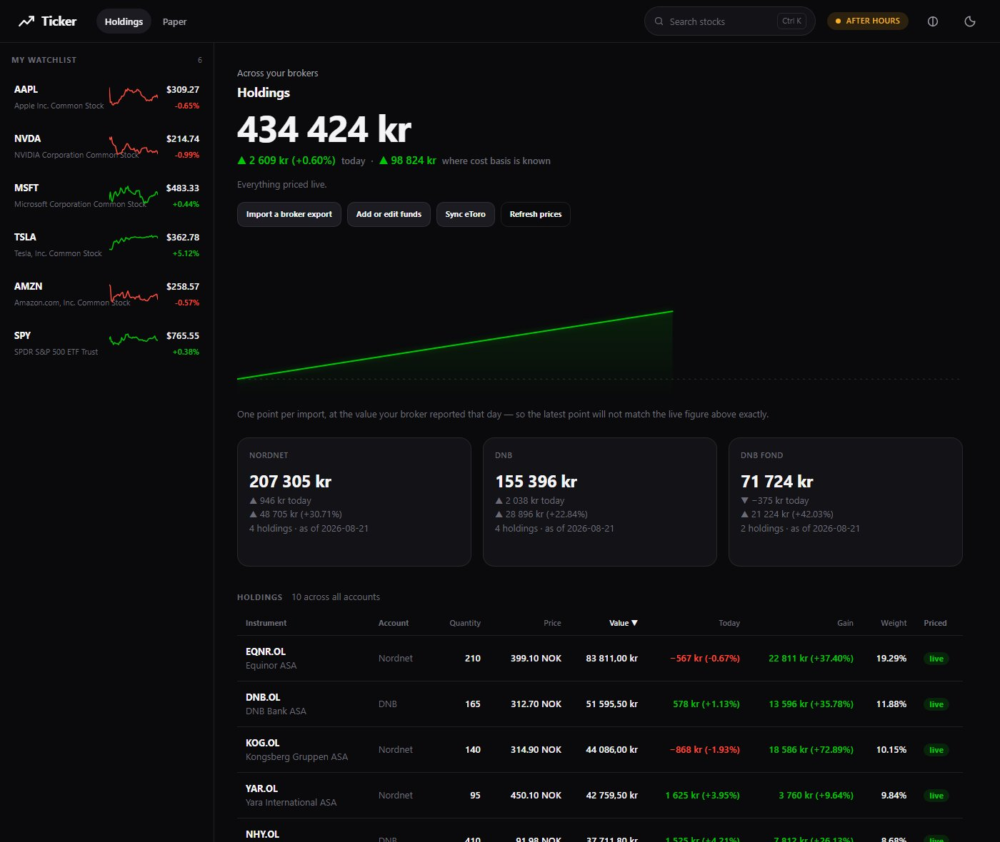

1 / 2Ticker
Stock watcher and multi-broker portfolio aggregator: live watchlists, scrubbable price charts, a paper portfolio and price alerts. Pulls holdings from eToro, Nordnet and DNB into one NOK total.
Wrote parsers for two undocumented export formats (UTF-16LE CSV, and XLSX read straight from the zip) and reconciles every import against the file’s own total.